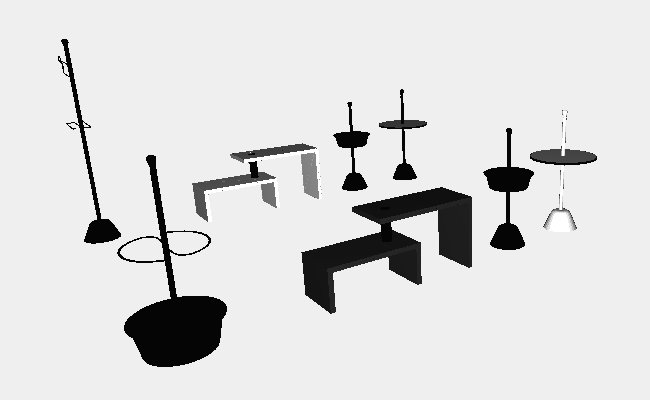

Fantastic 12
A very special family, useful and innovative, timeless, as of the Servi designed by the Castiglioni for Zanotta. A success that continues today. Among all furniture complements of modern design, the series of the Servi di Achille Castiglioni and PierGiacomo is undoubtedly the most popular. Developed over two decades from 1961, this collection is still very timely. The Milanese designers conceived the series as a functional, minimalist and strong and fit to "serve" domestic spaces but also the public, a modular, removable, modular. Homogeneous in progress. A single polypropylene base, a steel rod that acts as a high or low support and some accessories that hold, carry, contain, report. The colors: black, white and aluminum. The first to be born in '61, by the extraordinary compositional skill of the Castiglioni brothers were the two founders and Servofumo Servopluvio, respectively, a floor ashtray and an umbrella stand essential. With only four pieces, the designers built the two complements: a rod, a base, a curved rod and a pool that acts as a water collection for umbrellas in a bathtub and the ash in the other. They conceived that, as is often the designers who do not find what they need on the market, to furnish the restaurant and brewery Splügenpass of Milan. He followed the Servomuto (design 1974, shelf laminated plastic or rigid polyurethane white or black, with a rod "prehensile"), which was the first to go into production in '75, followed by 80 Servomuto and Servopluvio and then the other of the "family".Zanotta introduced him that year at the Salone del Mobile: few understood it immediately, but then conquered the market.Like the other ten Servants that drew Castiglioni until 1987. Many of these objects have fallen into over the years in the permanent collections of up to 7 museums in the world of design.
3D modelling
I chose to draw some models of the Servi's family:
- Servofumo
- Servomuto
- Servonotte
- Servopluvio
And finally I added a Basello table.
Thanks to the modularity of the code I could create an entire room with the models previously created properly translated
Screenshot of the 3D model
Javascript

ZANOTTA Design
- Basello
- Servofumo
- Servomuto
- Servonotte
- Servopluvio
- The Servi's Family